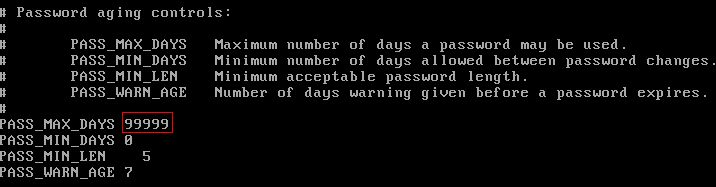

If an ECS cannot be logged in because of expired image password, you can contact the administrator for handling.
If the ECS can still be logged in, you can perform the following operations to set the password validity period.
Procedure
The following operations use EulerOS 2.2 as an example.
- Log in to the ECS.
- Run the following command to check the password validity period:
The value of parameter PASS_MAX_DAYS is the password validity period.
- Run the following command to change the value of parameter PASS_MAX_DAYS:
chage -M 99999 user_name
99999 is the password validity period, and user_name is the system user, for example, user root.

You are advised to configure the password validity period as needed and change it at a regular basis.
- Run command vi /etc/login.defs to verify that the configuration has taken effect.Figure 1 Configuration verification
